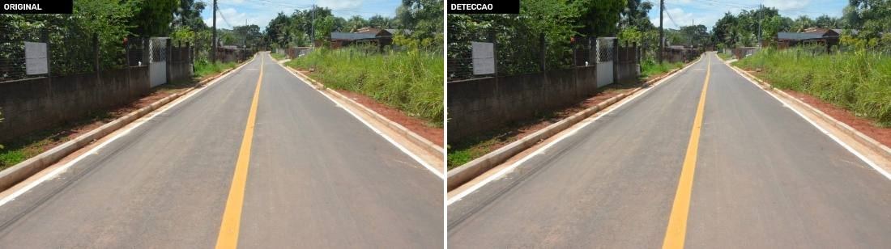
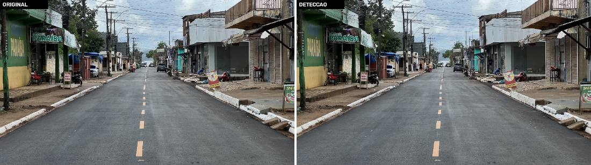
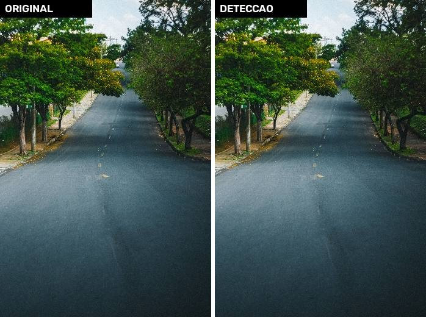
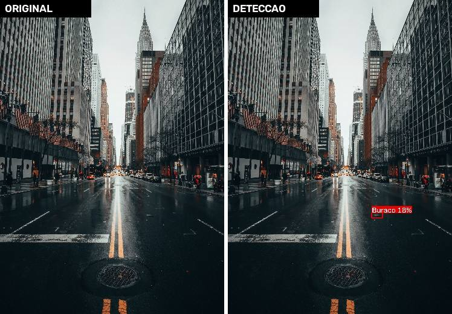

sem_danos/Pavimentacao-Travessa-Bezerra-13-e1708093359413.jpeg
defeitos: 0 (buracos 0, rachaduras 0) | inferencia 56.24 ms

sem_danos/RUA-UMBELINO-DE-OLIVEIRA-scaled.jpg
defeitos: 0 (buracos 0, rachaduras 0) | inferencia 52.07 ms

sem_danos/pexels-anderson-martinsz-34634610.jpg
defeitos: 0 (buracos 0, rachaduras 0) | inferencia 65.07 ms

sem_danos/photo-1546636889-ba9fdd63583e.avif
defeitos: 1 (buracos 1, rachaduras 0) | inferencia 68.81 ms